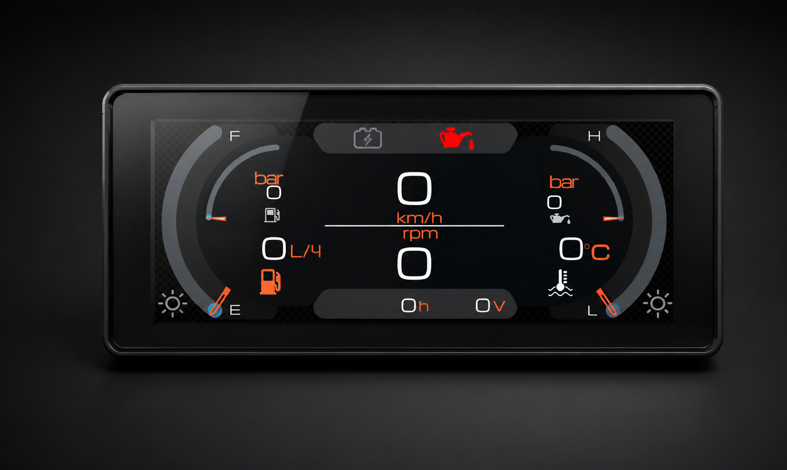

Configurable instrument panel for airboats and special-purpose vessels, combining readability, diagnostics and system status in a single marine-adapted display.
Request information
Dash-6.8 combines primary engine data, diagnostics and onboard status in a single readable interface for marine and special-purpose applications.
This page can later include real UI screenshots, page hierarchy, warning screen behavior, day and night themes, enclosure dimensions and installation cutout data.
The structure is ready for diagrams, connector details, supported sensors, firmware update workflow and downloadable technical documents.